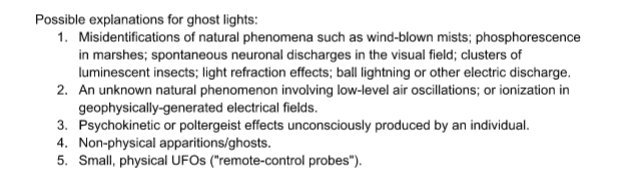
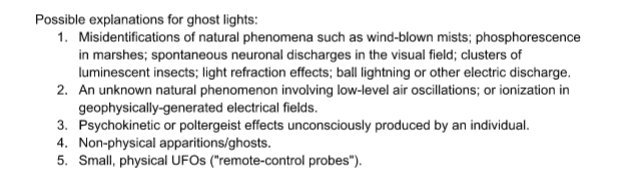
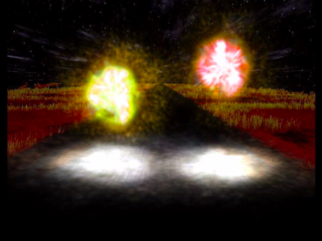
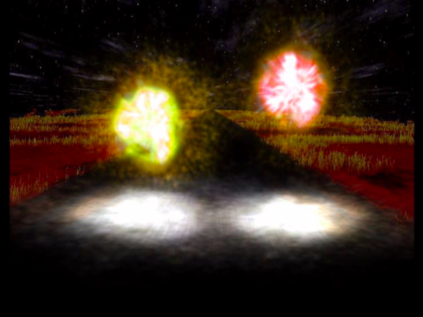

Min Min Light
Australian neuroscientist Jack Pettigrew who has studied the lights stated the “old timers out
there who had seen it and they were terrified by it…outback men can be brought to tears by
this thing. It really is quite alarming.”
Wonderful during the day, such Fata Morgana can be terrifying at night when a single light
source gives no hint that it is actually part of a mirage emanating from a great distance." Even
hardened Outback observers can break down when they are unable to interpret the unusual
optical properties of the light in terms of their own, very different, past experiences
we can go back to 1838 to find the earliest known written account of the Min Min Light. It
comes from T. Horton James' book, Six Months in South Australia:
A group of explorers were camped in the Ovens River region of eastern Victoria, when they
saw a fire a little way off. Some of them rode off to investigate, but it was about three hours
before they returned, and had seen neither fire, bushrangers, nor travelers. They rode boldly
up to the spot where the fire, as they thought, was burning, but it was as far off as when they
started. In short, it turned out to be an ignis fatuus, or jack-a-lantern, and kept them upwards
of an hour trotting on in the vain pursuit, 'till by some sudden flickering and paleness, it
confirmed them in its unsubstantial nature and they returned rather mortified to bed...
TEMPORAL LOBE EXPERIENCES
Under extreme conditions, it has been speculated that at high voltages, individuals might
experience rather severe alterations in normal brain functions (Persinger, 1983c).


 



 
